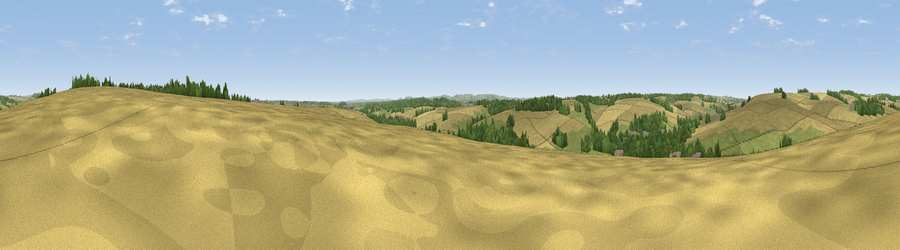

Viewpoint near Great Shefford
#34317 in England · top 63% of its area beats it · near Great SheffordThe view, rendered

A 360° render of this exact spot computed from the terrain model, tree cover and land cover — summer colours, afternoon light, calibrated against photographs of famous viewpoints. Real trees, hedges and buildings will differ in detail.
The panorama
Grey silhouette: terrain skyline in each direction (720 bearings, Earth curvature and refraction included). Dashed green: skyline with trees (+15 m) and buildings (+8 m) as obstacles. Blue strip: how far the ground is visible on each bearing.
Where the view opens
Wedge length = distance to the farthest visible ground on that bearing (vegetation-aware). Rings at 10, 25 and 50 km.
What fills the view
52% cropland · 29% grassland · 18% woodland · 1% built-up
Angular shares of the visible panorama (visual magnitude), not map area. Landscape diversity 0.46 (0–1 Shannon).
Key numbers
More beautiful places nearby
The staircase of upgrades: each row has a higher view potential than everything closer. Driving times are estimates from straight-line distance, calibrated against real road routing — check an actual route before setting out.
| Place | Direction | Drive | Score |
|---|---|---|---|
| Viewpoint near East Garston | NW · 2 km | ~6 min | 43.9 |
| Viewpoint near Eastbury | NW · 5 km | ~12 min | 48.4 |
| Viewpoint near Farnborough | NNE · 9 km | ~17 min | 57.5 |
| Smith's Hill | N · 9 km | ~17 min | 61.2 |
| Viewpoint near Letcombe Regis | N · 10 km | ~19 min | 62.0 |
| Seven Acre Hill | NNW · 11 km | ~22 min | 66.6 |
| Viewpoint near Kingston Lisle | NW · 13 km | ~24 min | 68.5 |
| Gallows Down | SSW · 13 km | ~25 min | 75.6 |
51.47644, -1.43732 · source: screening · position refined by local search. Computed location — check access rights before visiting.